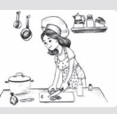
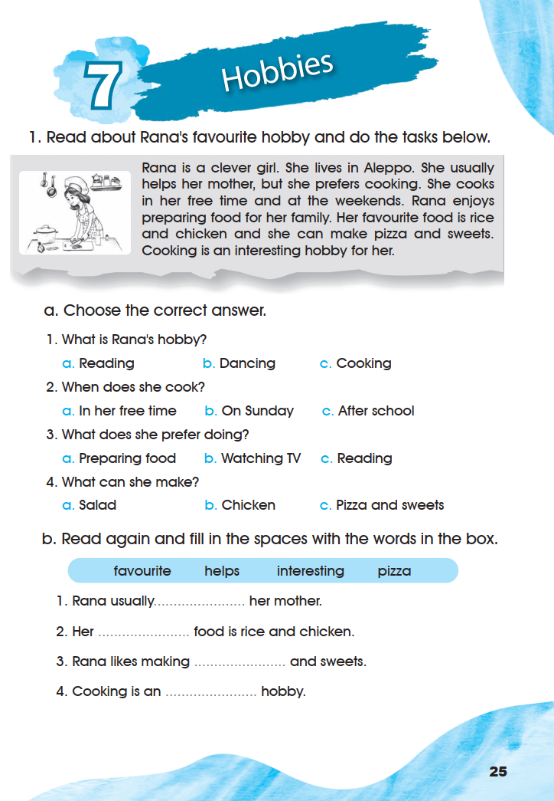
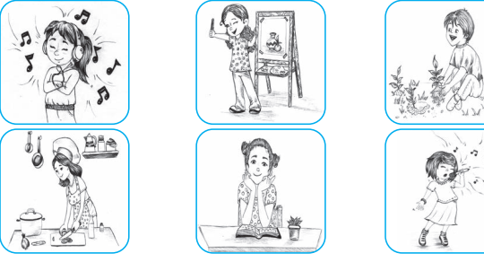
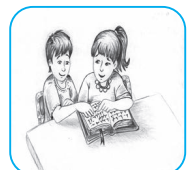
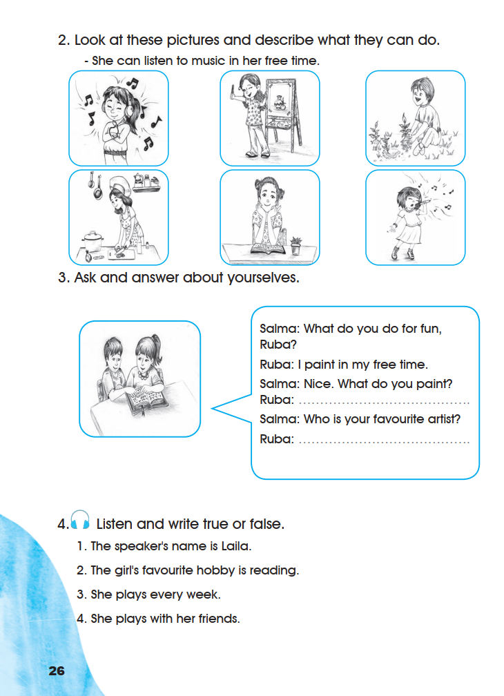
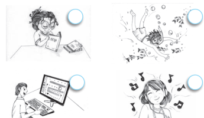
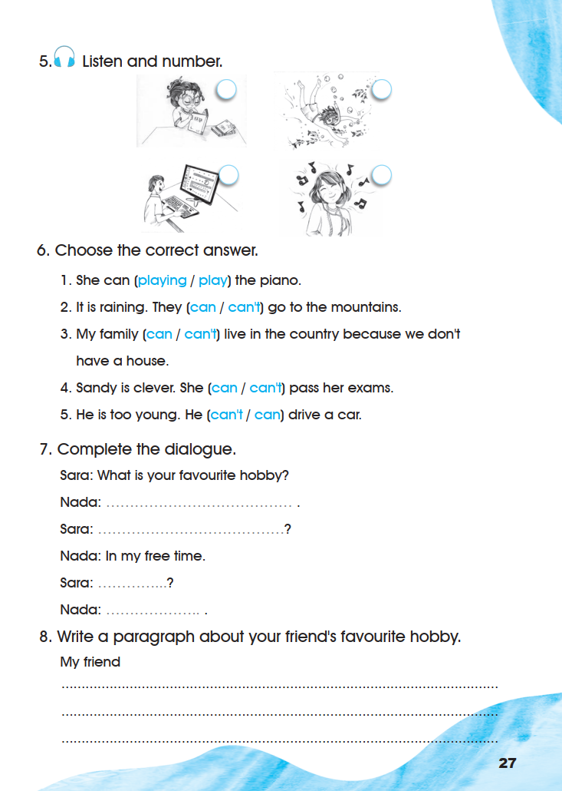

Workbook — Hobbies
Exercises 1–8 appear in their original order across pages 25–27. Listening exercises keep every printed word and picture but claim no answer, because the recordings were not supplied.
1. Read about Rana’s favourite hobby and do the tasks below.
Rana is a clever girl. She lives in Aleppo. She usually helps her mother, but she prefers cooking. She cooks in her free time and at the weekends. Rana enjoys preparing food for her family. Her favourite food is rice and chicken and she can make pizza and sweets. Cooking is an interesting hobby for her.

a. Choose the correct answer.
- 1
What is Rana’s hobby?
- 2
When does she cook?
- 3
What does she prefer doing?
- 4
What can she make?
0 of 4 answered.
b. Read again and fill in the spaces with the words in the box.
- favourite
- helps
- interesting
- pizza
- 1
Rana usually her mother.
- 2
Her food is rice and chicken.
- 3
Rana likes making and sweets.
- 4
Cooking is an hobby.
0 of 4 filled.
1 a. Choose the correct answer: 1 c. Cooking · 2 a. In her free time · 3 a. Preparing food · 4 c. Pizza and sweets.
1 b. Fill in the spaces: 1 helps · 2 favourite · 3 pizza · 4 interesting.
Item 2 a: the text says she cooks “in her free time and at the weekends”, so “In her free time” is the printed option that the text supports; “On Sunday” is not stated.
Open the source page · Workbook · p. 25
This is the original supplied image, shown without redrawing or generation.

2. Look at these pictures and describe what they can do.
She can listen to music in her free time.

0 of 6 filled.
3. Ask and answer about yourselves.

Salma: What do you do for fun, Ruba?
Ruba: I paint in my free time.
Salma: Nice. What do you paint?
Ruba:
Salma: Who is your favourite artist?
Ruba:
4. Listen and write true or false.
- 1
The speaker’s name is Laila.
- 2
The girl’s favourite hobby is reading.
- 3
She plays every week.
- 4
She plays with her friends.
0 of 4 answered.
2. Look at the pictures: 1 She can listen to music in her free time. (printed example) · 2 She can paint. · 3 He can plant flowers. · 4 She can cook. · 5 She can read. · 6 She can sing.
3. Ask and answer about yourselves: personal speaking task; the page prints no key. Model answers for Ruba: I paint flowers and animals. · My favourite artist is my mother.
4. Listen and write true or false: decided by the recording, which was not supplied. No true/false key is invented.
The six descriptions are read from the printed line drawings, following the printed example sentence.
Open the source page · Workbook · p. 26
This is the original supplied image, shown without redrawing or generation.

5. Listen and number.

0 of 4 answered.
6. Choose the correct answer.
0 of 5 answered.
7. Complete the dialogue.
Sara: What is your favourite hobby?
Nada:
Sara:
Nada: In my free time.
Sara:
Nada:
8. Write a paragraph about your friend’s favourite hobby.
6. Choose the correct answer: 1 play · 2 can’t · 3 can’t · 4 can · 5 can’t.
7. Complete the dialogue: personal writing; the page prints no key. Model answers: Nada: My favourite hobby is drawing. · Sara: When do you draw? · Sara: Do you draw every day? · Nada: Yes, I do.
5. Listen and number: decided by the recording, which was not supplied. No answer is invented.
Each choice in exercise 6 follows from the sentence around the gap: after can the plain verb is used, and the meaning decides between can and can’t.
Open the source page · Workbook · p. 27
This is the original supplied image, shown without redrawing or generation.
